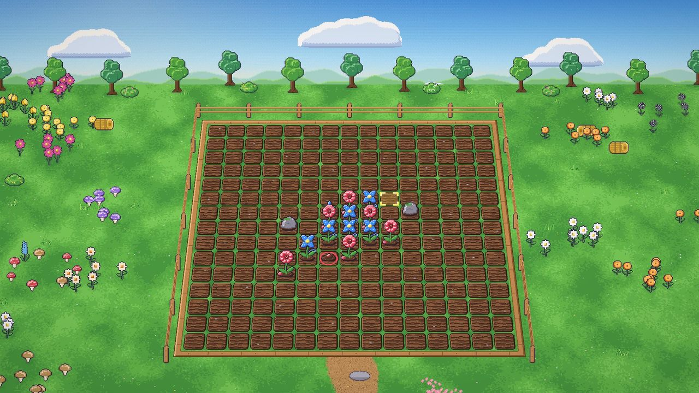
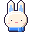
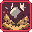

Wind Rabbit's turn
Plant a seed
Low
Medium
High

Wind Rabbit
Plays X, 7 planted
Your turn
SKILLS
Wind Dash
Ready
Tornado Zone
Ready
Earth Bear
Plays O, 7 planted
Waiting
SKILLS

2
Terrain Creation
Ready in 2 turns
Stone Conversion
Wait for your turn